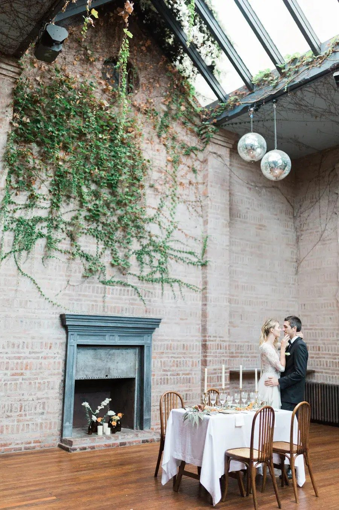
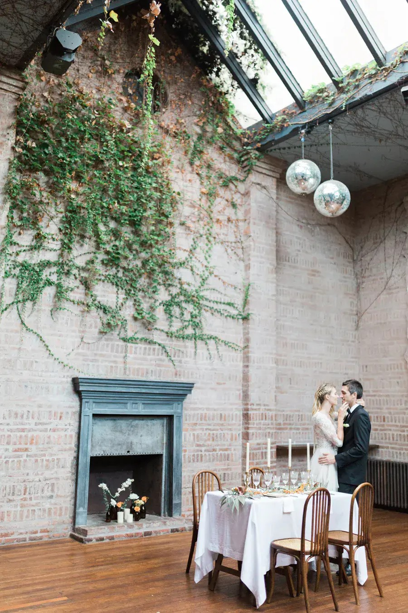
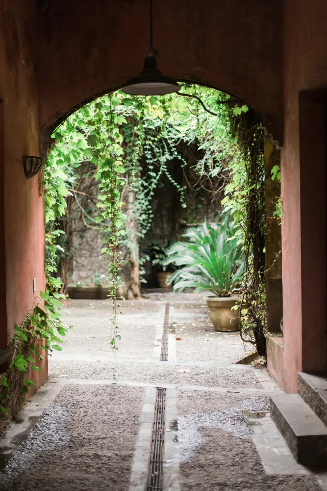
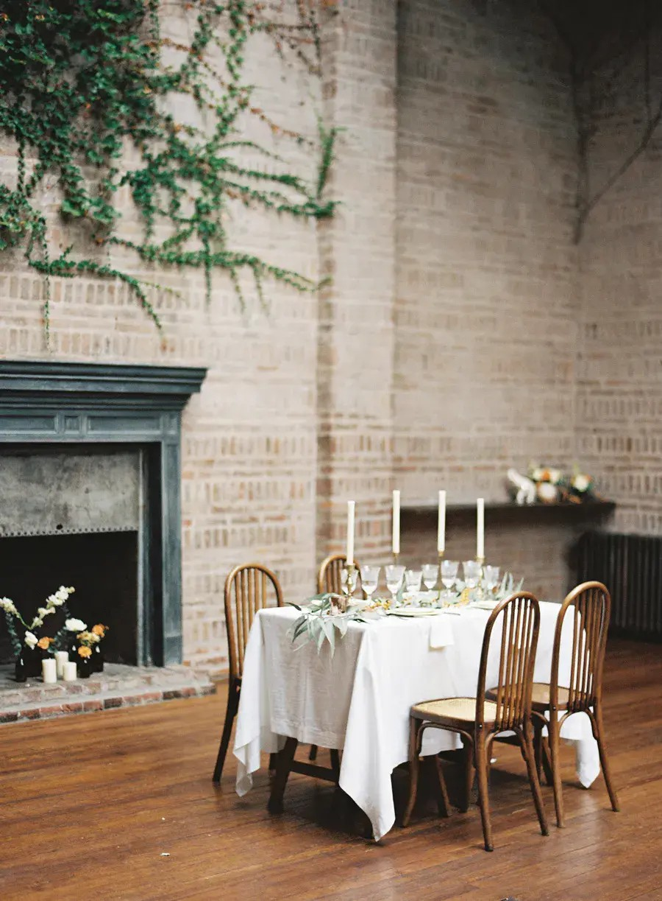
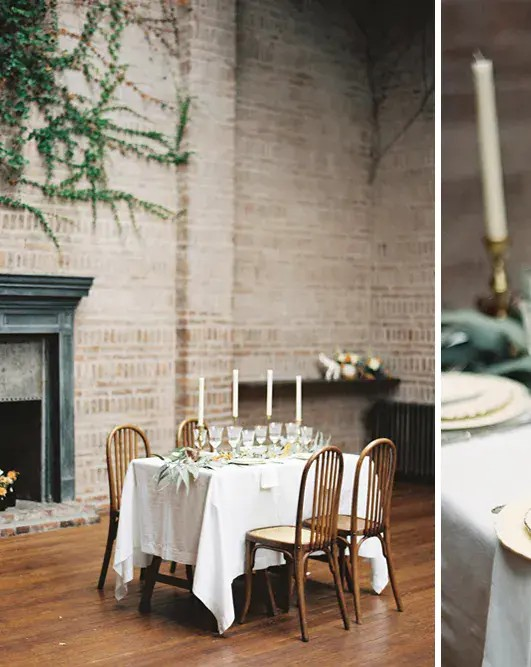

Weddings
London Wedding Photographer in Buenos Aires
10 February 2015

Here is another special one for you–a wedding I shot while I was in Argentina, at a beautiful venue called the Lowlands in Buenos Aires! This one was a little different for me because unlike what I’m used to in London or the States, the weddings here take place late–like very, very late. The bride began getting ready well after dark and the party went on until the wee hours of the morning–those Argentinians know how to throw a party!
Additionally, while I normally take the Bride and the Groom for couple’s portraits in the time between the ceremony and the reception–these two preferred to get back to their guests straight away so as not to miss any of the action! Ironically, the venue had a British theme with equestrian details and an antique car museum which left me with lots of little details to capture (my favorite!).
The styling of the party was done by Flor & Angie of HNAS.Martin Martin http://www.hnasmartinmartin.com.ar/ –I had the pleasure of working with these talented ladies for another shoot while I was there and I can’t recommend them highly enough!



